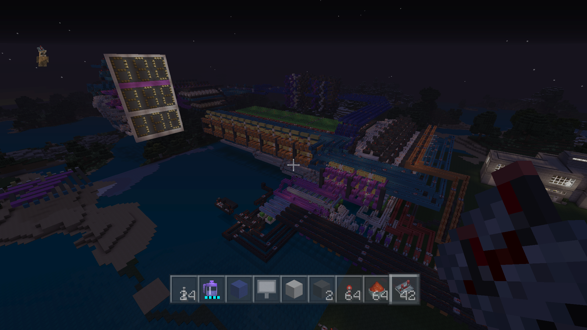

You may have seen something like this before on YouTube. Most of the time its the PC minecraft players that have the abilities to create such feats of engineering. MC edit as well as the copy and paist functions that are present in sandbox pluggins make building advanced systems or repetative configurations very easy to build fast. Here on Xbox we are stuck with no mods what so ever. No copy and paist, just the ability to spend countless hours counting and reapting the building of cruicial functions within an advanced system. And Not mention the debugging! ITS A MESS. However this promises to be one of the biggest computer builds ever to hit minecraft. This 8 bit computer has the ability to add or subtract values ranging from 0 to 255. The system is equipt with a hard drive with lines of code for the addition or subtraction methods, ROM memory or user input, ALU for arithmetic computation, RAM for manipulatable memory, Double Dabble algorith for changing Binary values to BCD (Binary Coded Decimal), Memory arrays that altimately hold the values for every number in the display, and finally a whole bunch of registers, decoders, and bussways. It is truly a marvel of minecraft engineering and here on this website we will present you with all the knowledge you need to know to build it.
